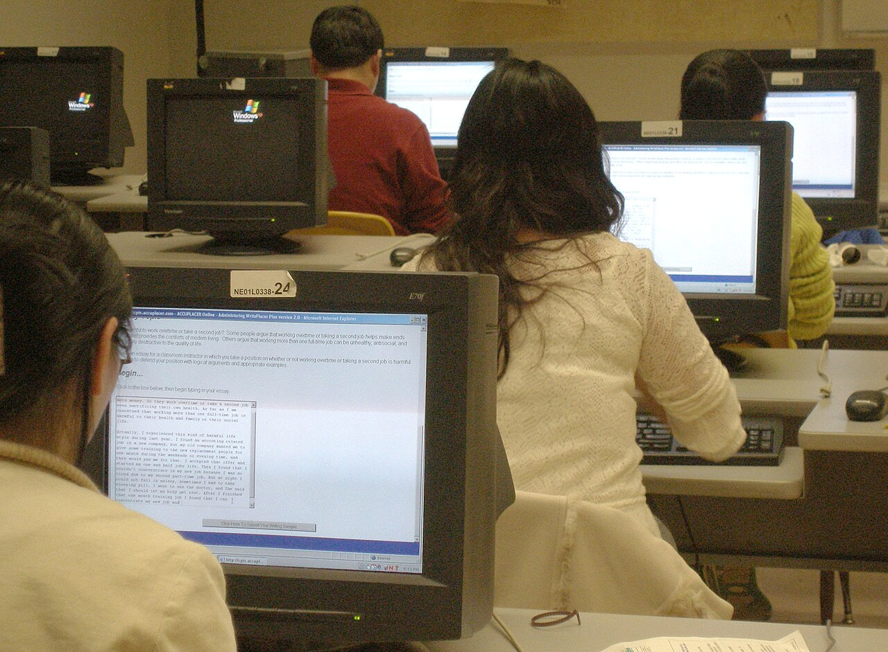

Tujuan Kegiatan
Peserta mengenal cara developer menyusun informasi, menggunakan tools, membaca error, dan membangun sesuatu secara bertahap.
PROJECT APLIKASI WEB
Dari pengguna teknologi menjadi pembuat teknologi.
TechStarter Day adalah kegiatan pengenalan dunia pengembangan web untuk mahasiswa baru Teknologi Informasi.
Peserta mengenal cara developer menyusun informasi, menggunakan tools, membaca error, dan membangun sesuatu secara bertahap.
Catatan: urutan agenda dapat menyesuaikan kondisi ruang laboratorium dan jumlah peserta.

Membaca struktur halaman sebagai developer.
Memilih tag berdasarkan makna konten.
Mendiagnosis link dan gambar yang gagal.
Menyimpan perkembangan project dengan Git.